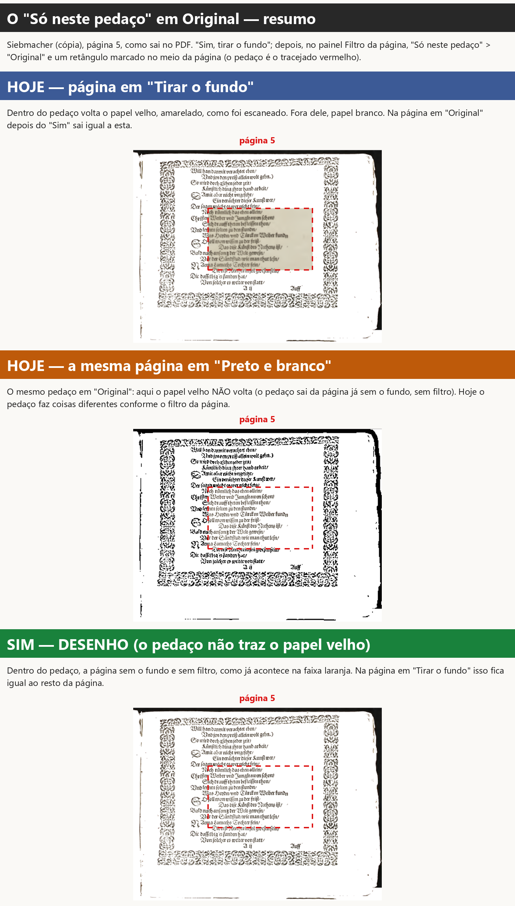
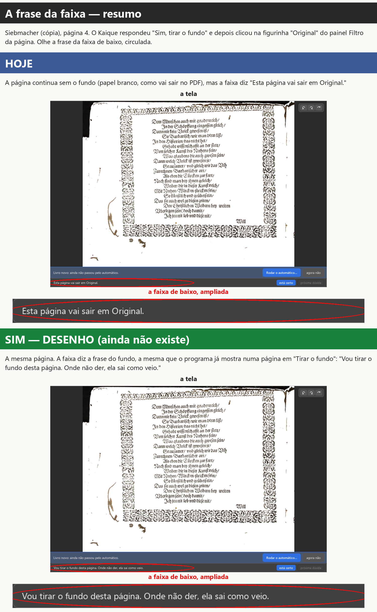
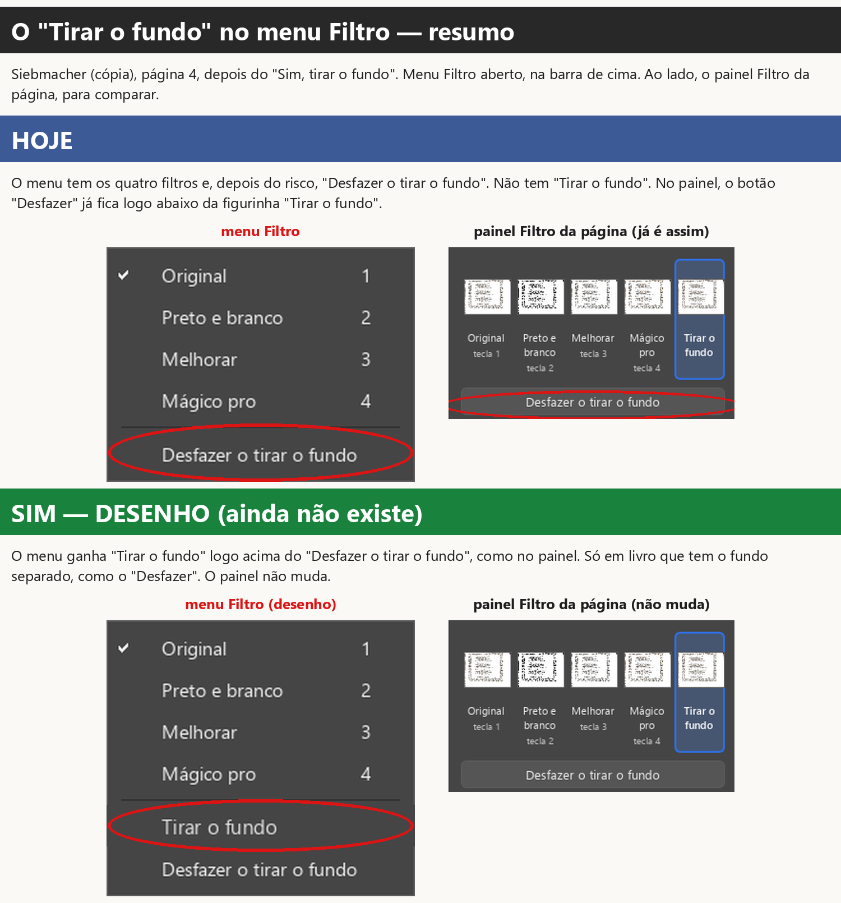
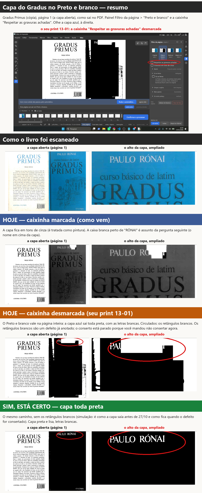
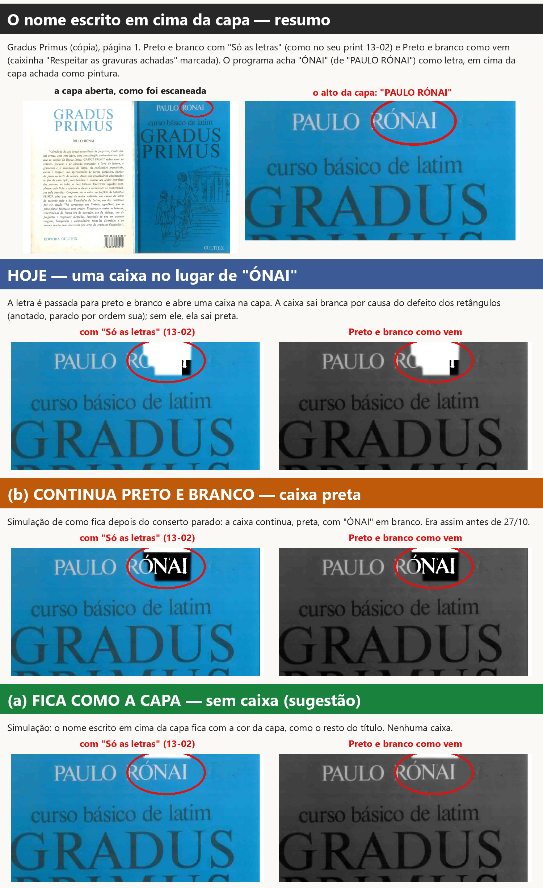
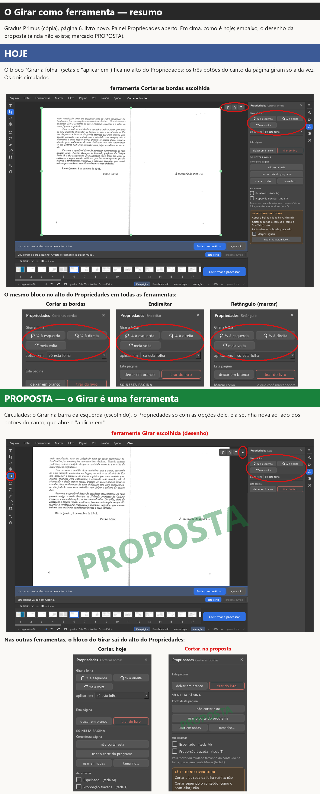

Preparadas pelo verificador para a gerente publicar na Central. Nenhuma linha do programa mudou. Os prints são da versão de teste, feitos sem abrir janela na sua tela, com cópias dos livros. O que ainda não existe aparece como desenho ou proposta, escrito no título da faixa.
Cores das faixas: azul = como é hoje; laranja = a outra opção (ou outro caso de hoje); verde = a sugestão. O que olhar está circulado ou tracejado em vermelho.
Do que se trata. No painel Filtro da página (à direita da página), a parte "Só neste pedaço" deixa escolher um filtro só para uma área que você marca na página. Caminho: painel Filtro da página > "Só neste pedaço" > "Original" > marcar a área na página (com o Retângulo, por exemplo). O filtro escolhido vale para o que se marcar depois.
O que acontece hoje. No Siebmacher, depois do "Sim, tirar o fundo", marquei um pedaço em "Original" no meio da página 5: - com a página em "Tirar o fundo" (ou em "Original" depois do "Sim"), o papel velho, amarelado, volta dentro do pedaço (faixa azul); - com a mesma página em "Preto e branco", o mesmo pedaço não traz o papel velho: sai da página já sem o fundo, sem filtro (faixa laranja).
Ou seja, hoje o mesmo pedaço faz duas coisas diferentes, conforme o filtro da página. Não é defeito do programa: o papel velho no pedaço é o que você escolheu em 05/10 ("Sim, do mesmo jeito (só muda se alguém marcar um pedaço)"). Mas a sua regra de 07/11 diz "nenhum filtro deve fazer o fundo voltar".

O que você escolhe: se o pedaço em "Original" pode trazer o papel velho de volta numa página com o fundo tirado.
Você continua no controle? Sim. O pedaço só age quando alguém marca um pedaço e escolhe o filtro dele; vale só na página onde foi marcado. Tela e PDF saem iguais.
De onde veio. Da sua escolha de 05/10 e da sua regra de 07/11. O agente que fez o conserto do fundo (13/11) achou o choque entre as duas e não mexeu, para perguntar.
Situação de agora. O conserto do "Tirar o fundo" está na versão de teste, esperando o seu teste. Este ponto não foi mexido: está como na faixa azul até você responder.
(Para consulta: D-172, D-646, D-699, D-605.)
Do que se trata. A faixa cinza embaixo da página, na área de trabalho, diz o que vai sair da página da vez.
O que acontece hoje. No Siebmacher, depois do "Sim, tirar o fundo", cliquei na figurinha "Original" da página 4 (a tecla 1, o menu Filtro e o Automático fazem o mesmo). A página continua sem o fundo, como manda a sua regra de 07/11, mas a faixa diz "Esta página vai sair em Original." Antes de clicar, dizia "Vou tirar o fundo desta página. Onde não der, ela sai como veio." Todo trabalho salvo antes do conserto com páginas em "Tirar o fundo" abre assim. A página e o PDF estão certos; só a frase não diz que o fundo foi tirado. Não é defeito da imagem: é a frase, que não acompanhou o conserto (o agente não mudou texto sem você mandar).

O que você escolhe: a frase da faixa numa página em "Original" com o fundo tirado.
Em todas: só muda a frase. A página, o PDF e o que já funciona não mudam.
Você continua no controle? Não há nada para ligar ou desligar: é só o texto da faixa, que aparece sozinho quando a página não tem aviso.
De onde veio. Achado pelo agente que fez o conserto do fundo (13/11), depois do seu pedido de 07/11.
Situação de agora. O conserto do fundo está na versão de teste, esperando o seu teste; a frase está como na faixa azul.
(Para consulta: D-646, D-699.)
Do que se trata. O menu Filtro, na barra de cima do programa, tem os filtros da página com as teclas 1 a 4.
O que acontece hoje. O menu tem Original, Preto e branco, Melhorar, Mágico pro e, depois de um risco, "Desfazer o tirar o fundo". Não tem "Tirar o fundo": ele só existe no painel Filtro da página (a figurinha) e na lista do "Só neste pedaço". A sua resposta de 13/11 ("Ok") dizia "logo abaixo do 'Tirar o fundo', no menu Filtro e no painel". No painel ficou assim; no menu não deu, porque o menu não tinha "Tirar o fundo".

O que você escolhe: se o menu Filtro ganha o "Tirar o fundo".
Você continua no controle? Sim: é só mais um lugar para o mesmo clique da figurinha. Age só quando se clica.
De onde veio. Uma ideia de agente de 29/09, na Lista de espera ("'Tirar o fundo' também no menu Filtro (e talvez tecla 5)"), não um pedido seu; e a sua resposta de 13/11, que fala do menu. A tecla 5 fica de fora, a não ser que você queira.
Situação de agora. O "Desfazer o tirar o fundo" está na versão de teste, esperando o seu teste. O menu está como na faixa azul.
(Para consulta: D-699, D-492, Lista de espera de 29/09.)
Do que se trata. No painel Filtro da página, logo abaixo das figurinhas dos filtros, há a caixinha "Respeitar as gravuras achadas". Marcada (como vem), o filtro respeita as pinturas e fotos que o programa achou: no Preto e branco elas saem em tons de cinza. Desmarcada, o filtro vale na página inteira.
O que acontece hoje. No seu teste de 13/11 (print 13-01), no Gradus, página 1, você escolheu "Preto e branco" e desmarcou a caixinha (às 16h09, está no histórico do trabalho). A capa azul saiu toda preta, com as letras brancas. Isso é o que você escolheu em 29/10: "Desligada, o filtro vale na página inteira: no Preto e branco, a capa sairia toda em preto e branco". Então a capa preta é efeito da escolha, não defeito. Os retângulos brancos em cima dela são defeito do programa, já anotado; o conserto está parado porque você mandou não consertar agora.

O que você escolhe: se a capa toda preta, com a caixinha desmarcada, está certa.
Você continua no controle? Sim. A caixinha liga e desliga por página, e vai às outras pelo "Aplicar em". Marcada, a capa sai em tons de cinza (faixa azul). Ela age só quando você clica nela.
De onde veio. A caixinha é um pedido seu de 29/10 ("A"). A investigação dos seus prints 13-01 e 13-02 foi feita em 13/11.
Situação de agora. A caixinha está no programa e foi testada por você em 29/10. Os retângulos brancos estão parados por ordem sua ("Não quero consertar isso agora"); esta pergunta não mexe neles.
(Para consulta: D-586, D-583, D-147, D-700.)
Do que se trata. No Preto e branco, o programa separa a página em partes: letras, pinturas e papel. Com "Só as letras" (painel Filtro da página > Preto e branco > parte "Só as letras"), só as letras viram preto e branco; as pinturas ficam com a cor. Com a caixinha "Respeitar as gravuras achadas" marcada (como vem), a pintura sai em tons de cinza e as letras em preto e branco.
O que acontece hoje. Na capa do Gradus, o programa achou a capa azul como pintura e o pedaço "ÓNAI" (de "PAULO RÓNAI") como letra, em cima dela. Uma regra do programa faz a letra ganhar da pintura: o pedaço vira preto e branco e abre uma caixa no meio da capa (seu print 13-02). Hoje a caixa sai branca, por causa do mesmo defeito dos retângulos (anotado, parado por ordem sua); sem esse defeito ela sai preta, com "ÓNAI" em branco, como era antes de 27/10. Essa regra ("a letra ganha da pintura") é de 30/09 e foi feita para outro caso: legenda escura impressa sobre cartão claro, como as legendas do Pesel. Não é pedido seu nem defeito: é uma regra do programa que aqui dá um resultado ruim. Por isso é escolha sua.

O que você escolhe: o que acontece com um nome claro escrito em cima de uma capa ou pintura escura que o programa achou.
Você continua no controle? Sim. Quem quiser a capa toda em preto e branco desmarca "Respeitar as gravuras achadas" (pergunta B1). Com (a) ou (b), a regra age sozinha, só onde o programa acha letra em cima de pintura.
De onde veio. A regra é do programa (30/09), feita para as legendas do Pesel; achada na investigação dos seus prints 13-01 e 13-02 (13/11).
Situação de agora. Só pergunta; nada foi feito. O conserto dos retângulos brancos está parado por ordem sua.
(Para consulta: D-148, D-147, D-586, D-587, D-700; item 1.2.)
Do que se trata. Hoje o Girar fica em dois lugares da área de trabalho: - o bloco "Girar a página" (ou "Girar a folha", numa folha inteira), no alto do painel Propriedades, em todas as ferramentas (Cortar, Endireitar, Mover, as de marcar...), com as três setas e o "aplicar em" (só esta / todas / daqui em diante / só as pares / só as ímpares); - os três botões pequenos no canto de cima, à direita da página, que giram só a página da vez.
Foi o que você escolheu em 12/10: "Quero a opção B e D" (o bloco no alto do Propriedades e os botões do canto) e "B — Só no painel" (o "aplicar em" só no Propriedades; o canto gira só a página da vez). Em 13/10, "Está bom".
O que você disse em 13/11. "Para escolher aplicar em todas tem que estar dentro de um painel de outras funções, não existe um painel do girar" · "Pode ser, e ai as opções dele apareceriam em propriedades quando fosse selecionado né?" · "Como o propriedades funciona hoje? Ele funciona através da escolha de ferramentas né?"
Como o Propriedades funciona hoje. Sim: ele mostra as opções da ferramenta escolhida na barra da esquerda. A exceção é o alto do painel: o bloco do Girar e, embaixo dele, os botões "Esta página" (deixar em branco / tirar do livro) aparecem em todas as ferramentas. Os botões "Esta página" não mudam nesta proposta.
A proposta da gerente (desenho, ainda não existe). 1. O Girar vira uma ferramenta na barra da esquerda, junto do Dividir, Cortar, Endireitar e Mover. 2. Escolhendo o Girar, o Propriedades mostra só as opções dele: as três setas e o "aplicar em". 3. Nas outras ferramentas, o bloco do Girar sai do alto do Propriedades (sobra espaço para as opções delas). 4. Os três botões do canto continuam, para girar rápido só a página da vez, com uma setinha ao lado que abre o "aplicar em".

O que você escolhe: se o Girar passa a ser uma ferramenta, com as opções no Propriedades só quando ele está escolhido.
Você continua no controle? Sim: girar só acontece quando se clica numa seta (no Propriedades ou no canto) ou se usa a tecla. O "aplicar em" começa em "só esta", o mais seguro, como hoje.
De onde veio. Da sua conversa de 13/11 no chat (as frases acima). O lugar da ferramenta na barra, no desenho, é só um exemplo.
Situação de agora. Só proposta; nada foi feito. Se você disser sim, ela entra junto com o conserto do girar numa regra só (o girar que hoje faz coisas diferentes em lugares diferentes), que espera as suas respostas às 4 perguntas da revisão do código, na Central.
(Para consulta: D-049, D-053, D-367, D-618, D-636; CLAUDE.md §11.12.)
Editor de Impressão · gerado em 14/11/2026 às 13:15